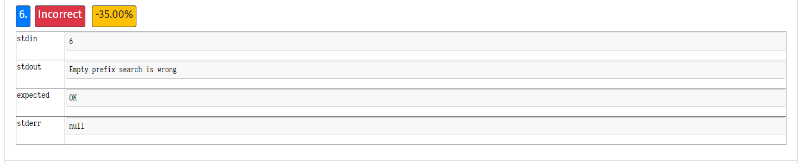

Termin 13:00-15:00 je isti zadatak dobio ili ?
FERella Mislim da je to samo self.root = TrieNode("")
Interleaved prefix search kako ispravit?
angello2 Jeli to novi zadatak?
Bisolvon ne, 4. test na ovom zadatku istom mi pada
angello2 Imas neki dodatni log errora ili samo ovo gore?
Bisolvon samo to, i kak bi ja sad trebo znat kaj njima znaci interleaved prefix search
svi ostali testovi prolaze… nema smisla
angello2 Napisi ticket ako mogu pojasnit, bar da znas izgled stabla u tom slucaju.
angello2 Možda si ušao u krivu granu npr. riječ Ja i riječ Jako pa možda si ušao u Jako umjesto u Ja
Je li isti zadatak sad u 15:00?
Isti zadatak u 15.00 #help 
Bisolvon
Po ovom “jadnom” prikazu greške jedino mogu zaključiti da ti baca error prilikom pretrage praznog stringa. Pokusaj da ako je ulazni str prazan, da ti vraća true
Ok, blicevi su se ponovili svi isti. Imao sam one dvije greske: “Empty prefix search is wrong” i “Interleaved prefix search”. obije greske su zato sto sam ja smatrao da npr. rijec “Ivan” ne moze biti prefix rijeci “Ivan”. Edgar kaze da moze.
labos u 15, isti progr zad. Pitalice su se sve ponovile.
Burrows-Wheeler transformacija (BWT) je postupak koji se koristi u… predprocesiranju tekstualnih podataka
kako ste rijesili zadnji test? similar prefix insert is wrong
azex
Također me zanima, ispisao sam si stablo i činilo mi se kao da je dobro umetnuto sve, ako netko može pejstat funkciju insert s kojom je to prošlo, bio bi zahvalan
azex meni je isto taj error bacalo, popravio sam tako da u root node ne stavljam nikakav default character self.root = TrieNode("")
Hrvoje45 evo nasao, moj problem je bio sto nisam predavao novi char konstruktoru, TrieNode(char)
https://helloacm.com/teaching-kids-programming-python-implementation-of-trie-data-structure-prefix-tree/ evo kod, samo ispravite tu gresku gore i jos malo promijenite da pase
Similar prefix insert is wrong kako popraviti. (Koristio sam u root nodu TrieNode(""))
Labos u 17:00, isti zadatak i pitalice.